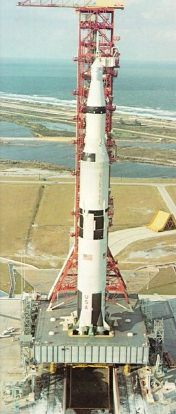

| 
|
Getting set for the flames of an Apollo
launch. The thrust chambers of the first
stage's five engines extend into the 45-foot-square
hole in the Mobile Launcher platform.
Until liftoff, the flames will impinge downward
onto a flame deflector that diverts the
blast lengthwise in the flame trench. Here,
a flame deflector coated with a black
ceramic is in place below the opening, while
a yellow (uncoated) spare deflector rests on
its track in the background. It takes a tremendous
flow of water (28,000 gollons per
minute) to cool the flame deflector and
trench. The pumps, which start 8 seconds
before ignition, can deliver that flow for
30 seconds, and then a reduced flow for
an indefinite period. Another 17,000 gpm
of water curtains the Mobile Launcher
tower from the rising flames.
|